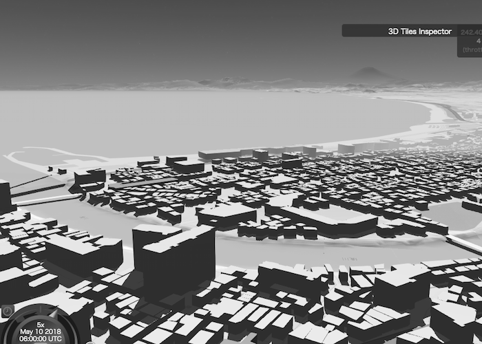
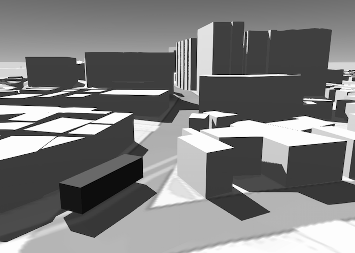

<!DOCTYPE html>
<html lang="en">

  <head>
    <!-- Global site tag (gtag.js) - Google Analytics -->
    <script async src="https://www.googletagmanager.com/gtag/js?id=UA-129806949-1"></script>
    <script>
      window.dataLayer = window.dataLayer || [];
      function gtag() { dataLayer.push(arguments); }
      gtag('js', new Date());
      gtag('config', 'UA-129806949-1');
    </script>

    <meta charset="utf-8">
    <meta name="viewport" content="width=device-width, initial-scale=1, shrink-to-fit=no">
    <meta name="description" content="">
    <meta name="author" content="">

    <title>Landscapes - 3D Webコンテンツ作成プラットフォーム</title>

    <!-- Bootstrap core CSS -->
    <link href="vendor/bootstrap/css/bootstrap.min.css" rel="stylesheet">

    <!-- Custom fonts for this template -->
    <link href="vendor/font-awesome/css/font-awesome.min.css" rel="stylesheet" type="text/css">
    <link href="https://fonts.googleapis.com/css?family=Lora:400,700,400italic,700italic" rel="stylesheet" type="text/css">
    <link href='https://fonts.googleapis.com/css?family=Cabin:700' rel='stylesheet' type='text/css'>

    <!-- Custom styles for this template -->
    <!-- <link href="css/grayscale.min.css" rel="stylesheet"> -->
    <link href="css/grayscale.css" rel="stylesheet">

  </head>

  <body id="page-top">

    <!-- Navigation -->
    <nav class="navbar navbar-expand-lg navbar-light fixed-top" id="mainNav">
      <div class="container">
        <a class="navbar-brand js-scroll-trigger" href="#page-top">Landscapes</a>
        <button class="navbar-toggler navbar-toggler-right" type="button" data-toggle="collapse" data-target="#navbarResponsive" aria-controls="navbarResponsive" aria-expanded="false" aria-label="Toggle navigation">
          Menu
          <i class="fa fa-bars"></i>
        </button>
        <div class="collapse navbar-collapse" id="navbarResponsive">
          <ul class="navbar-nav ml-auto">
            <li class="nav-item">
              <a class="nav-link js-scroll-trigger" href="#about">About</a>
            </li>
            <li class="nav-item">
              <a class="nav-link js-scroll-trigger" href="#download">Try Demo</a>
            </li>
            <li class="nav-item">
              <a class="nav-link js-scroll-trigger" href="#contact">Contact</a>
            </li>
          </ul>
        </div>
      </div>
    </nav>

    <!-- Intro Header -->
    <header class="masthead">
      <div class="intro-body">
        <div class="container">
          <div class="row">
            <div class="col-lg-8 mx-auto">
              <h2 class="brand-heading">Landscapes</h2>
              <p class="intro-text">見て楽しい、3D Webコンテンツ作成プラットフォーム</p>
              <a href="#about" class="btn btn-circle js-scroll-trigger">
                <i class="fa fa-angle-double-down animated"></i>
              </a>
            </div>
          </div>
        </div>
      </div>
    </header>

    <!-- About Section -->
    <section id="about" class="content-section text-center">
      <div class="container">
        <div class="row">
          <div class="col-lg-8 mx-auto">
            <h2>About Landscapes</h2>
            <p>"Landscapes" は、3D Webコンテンツ作成プラットフォームです。<br>
              各種情報を背景図の上に配置して、3D Webコンテンツを作成することができます。</p>
            <p>詳細地形と建物が影付きで表示されます。独自の建物の重畳も可能です。<br>
              景観シミュレーションなどにご利用下さい。</p>
              
              
            <p>移動物の表現や注記の表示が可能です。観光案内などにもご利用下さい。</p>
              
            <p>画面の表示には<a href="https://cesiumjs.org">Cesium</a>を使用しています。カスタマイズも自由自在です。</p>
            <p>背景図の作成には<a href="http://www.gsi.go.jp/kiban/">基盤地図情報</a>と<a href="https://www.openstreetmap.org/">OpenStreetMap</a>を使用しています。</p>
          </div>
        </div>
      </div>
    </section>

    <!-- Download Section -->
    <section id="download" class="download-section content-section text-center">
      <div class="container">
        <div class="col-lg-8 mx-auto">
          <h2>Try Landscapes</h2>
          <p>Landscapeのデモページはこちらです。</p>
          <a href="./viewer/demo.html" class="btn btn-default btn-lg" tabindex="-1">Visit Demo Page</a>
        </div>
      </div>
    </section>

    <!-- Contact Section -->
    <section id="contact" class="content-section text-center">
      <div class="container">
        <div class="row">
          <div class="col-lg-8 mx-auto">
            <h2>Contact Landscapes</h2>
            <p>現在開発中のため、提供時期・提供範囲などは決定しておりません。<br>
              詳細が決まりましたら、このページでお知らせします。<br>
              ご質問がございましたら、お気軽にお問い合わせください。
            <ul class="list-inline banner-social-buttons">
              <!-- <li class="list-inline-item">
                <a href="https://twitter.com/RdSkcj" class="btn btn-default btn-lg">
                  <i class="fa fa-twitter fa-fw"></i>
                  <span class="network-name">Twitter</span>
                </a>
              </li> -->
              <li class="list-inline-item">
                <a href="http://skcompany.tokyo" class="btn btn-default btn-lg">
                  <span class="network-name">Company Website</span>
                </a>
              </li>
            </ul>
          </div>
        </div>
      </div>
    </section>

    <!-- Map Section -->
    <!-- <div id="map"></div> -->

    <!-- Footer -->
    <footer>
      <div class="container text-center">
        <p>Copyright &copy; SKcompany 2018</p>
      </div>
    </footer>

    <!-- Bootstrap core JavaScript -->
    <script src="vendor/jquery/jquery.min.js"></script>
    <script src="vendor/bootstrap/js/bootstrap.bundle.min.js"></script>

    <!-- Plugin JavaScript -->
    <script src="vendor/jquery-easing/jquery.easing.min.js"></script>

    <!-- Custom scripts for this template -->
    <script src="js/grayscale.min.js"></script>

  </body>

</html>
